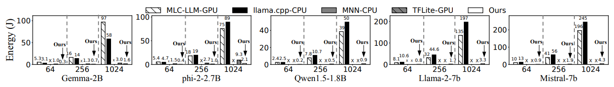

该论文瞄准了当前移动端大语言模型推理中的一个关键瓶颈问题：预填充（prefill）阶段的高延迟。随着隐私保护意识的增强和移动端模型能力的提升，越来越多的应用场景需要在设备本地运行大语言模型，如Apple Intelligence和Android AI Core等。
作者通过深入分析发现，在典型的移动应用中，预填充阶段占据了总推理时间的88.3%-98.8%（CPU）和54.2%-91.7%（GPU）。以UI自动化任务为例，处理一个5步骤的UI任务需要超过40秒，这在实际应用中是不可接受的。
📊 图1：移动端LLM推理系统面临的核心挑战分析
本文最大的创新在于提出了一套完整的移动端NPU-LLM协同推理架构。这不是简单的硬件移植，而是针对移动端NPU特性和LLM计算模式的深度重构。作者从三个层次进行了系统性重设计：提示级别（prompt level）、张量级别（tensor level）和块级别（block level）。
这种多层次的重构策略体现了作者对问题本质的深刻理解。与简单的算子级优化不同，这种系统级重构能够在保证功能正确性的前提下，最大化地发挥NPU的计算优势。
🔄 图2：llm.npu系统的完整工作流程，包括准备阶段和执行阶段的详细步骤
核心创新：将LLM算子分为静态算子和动态算子两类，通过预构建固定长度的子图避免重复的图构建开销。
传统的NPU推理需要为每个不同长度的输入重新构建和优化计算图，这个过程往往需要数十秒。作者巧妙地将LLM的计算图分解为可重用的固定长度子图，通过预构建和缓存这些子图，显著减少了运行时的图构建开销。
技术成果：在Qwen1.5-1.8B模型中，144个子图中有120个可以共享，内存消耗降低了75%。这种设计不仅提升了性能，还大幅减少了内存占用。
创新意义：这是首次在移动端NPU上实现大规模计算图重用的系统，为后续相关研究奠定了重要基础。
📊 图3：Chunk-sharing Graph技术的核心设计思想对比
核心创新：解决了激活异常值导致的量化精度损失问题，同时避免了传统分组量化方法在NPU上的效率损失。
将MatMul操作分解为两部分：在NPU上处理正常范围内的激活，在CPU上处理异常值。这种设计既保证了计算精度，又避免了NPU效率的损失，实现了数学等式分解思想与硬件特性的完美结合。
技术优势：通过动态识别和分离异常值，确保了NPU能够专注于处理规律性较强的数据，而CPU则负责处理复杂的异常情况。这种协同计算模式充分发挥了异构计算的优势。
实现细节：系统能够在推理过程中动态检测激活异常值，并将相应的计算任务无缝转移到CPU，整个过程对用户透明。
🔧 图4：阴影异常值执行的工作流程，展示了如何在NPU和CPU之间协同处理激活异常值
核心创新：基于NPU负载优先的调度策略，传统的按序执行会产生大量的执行气泡。
作者提出了基于NPU负载优先的调度策略，通过乱序执行来最大化NPU的利用率。系统能够智能分析子图之间的依赖关系，在保证计算正确性的前提下重新排序执行顺序。
性能提升：从传统37%的气泡率降低到0.7%，显著提升了系统的整体执行效率。这种改进直接转化为用户体验的显著提升。
算法优势：采用贪心调度算法，在保证实时性的同时获得了近似最优的调度效果。与复杂的全局优化算法相比，该方法在移动端具有更好的实用性。
🔄 图5：乱序子图执行调度策略，展示了如何通过智能调度减少执行气泡
这些技术创新的价值不仅在于单点突破，更在于系统性的协同设计。作者没有停留在算法层面的优化，而是从系统架构的角度重新思考了移动端LLM推理的技术路线。特别值得说明的是，作者在保证功能正确性的前提下，巧妙地平衡了性能、精度和资源消耗的多重约束。阴影异常值执行技术就是这种平衡艺术的典型体现——既不牺牲精度，也不放弃NPU的计算优势。
虽然llm.npu在移动端NPU利用方面取得了突破性进展，但仍有一些值得深入探索的改进方向。当前的块长度选择策略相对静态，作者通过离线profiling确定了256的块长度，这种静态配置可能无法适应不同模型和不同输入模式的最优需求。
🏗️ 图6：自适应块长度选择机制的系统设计
引入轻量级的在线profiling系统，根据当前模型的计算特征、输入长度分布和硬件负载情况动态调整块长度。这种动态调整可能需要额外的计算开销，但考虑到不同场景下性能差异的显著性，这种投入是值得的。
当前系统使用固定阈值来识别异常值，这种方法虽然简单有效，但可能无法适应不同层和不同输入的激活分布差异。可以考虑引入基于统计学习的动态阈值调整机制，或者使用更复杂的异常值检测算法。
设计基于强化学习的调度策略，通过在线学习来适应不同的工作负载模式。可以设计一个轻量级的actor-critic架构，其中actor负责调度决策，critic负责评估调度质量。
当前的实现主要针对Qualcomm Hexagon NPU，但不同厂商的NPU在架构和指令集方面存在显著差异。建议开发一套通用的NPU抽象层，类似于ONNX在深度学习框架中的作用。
在乱序执行调度算法方面，当前的贪心策略虽然在实践中表现良好，但理论上仍有优化空间。同时，可以进一步探索模型压缩技术与NPU优化的结合。当前工作主要关注推理阶段的优化，但如果能够在模型压缩阶段就考虑NPU的计算特性，可能会获得更好的端到端性能。例如，可以设计NPU-aware的剪枝策略，优先保留对NPU友好的计算模式。
本文的实验设计相当全面，涵盖了性能、精度、能耗和内存消耗等多个维度。作者选择了5个代表性的移动端LLM（从1.8B到7B参数），以及多种真实应用场景的数据集，这种实验设置确保了结果的代表性和可信度。
实验的结果非常出色：在1024 token的提示长度下，llm.npu实现了最高43.6倍的速度提升和59.5倍的能耗降低。更重要的是，这是首个在移动设备上实现超过1000 tokens/sec预填充速度的系统。
📈 图7：在不同设备和不同提示长度下，llm.npu相比baseline方法的速度优势
🔋 图8：llm.npu在能耗方面的显著优势（有益于移动设备电池寿命）
作者在实验方法论方面表现出了严谨的学术态度。特别值得注意的是消融实验的设计，清晰地展示了每个技术组件的贡献。从结果可以看出，阴影异常值执行贡献了3.91-8.68倍的性能提升，这证明了该技术的重要性。
🔍 图9：各技术组件的性能贡献消融实验结果
相比朴素NPU移植，性能提升1.46-5.09倍
通过预构建固定长度子图显著减少图构建时间
相比Chunk-sharing，性能提升3.91-8.68倍
动态处理异常值，实现精度与效率的完美平衡
相比Shadow Outlier，性能提升18-44%
智能调度策略显著减少执行气泡
💡 图10：进一步实验建议的系统化框架
通过这些改进，可以进一步验证llm.npu方法的普适性和实用性，为该技术的广泛应用奠定更坚实的基础。同时，这些实验结果也能够为后续研究提供更丰富的insights和指导。总体来说，这项研究在移动端LLM推理优化领域做出了重要贡献，不仅提出了创新的技术方案，还通过详实的实验验证了方案的有效性。随着移动端AI应用的不断发展，这类系统级优化研究将变得越来越重要，而这篇论文的工作无疑为这一领域树立了新的标杆。